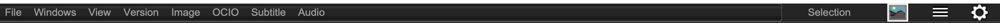

The menu toolbar

The menu toolbar allows you to interact with mrViewer in a variety of areas. It contains the same menus accesible to you by using the RMB.
In addition to that it offers a summary of what tool is active. It also contains a fit window to image button, a color controls button, and a preferences button.
The menu toolbar can be toggled on and off by using the SHIFT+F1 hotkey.